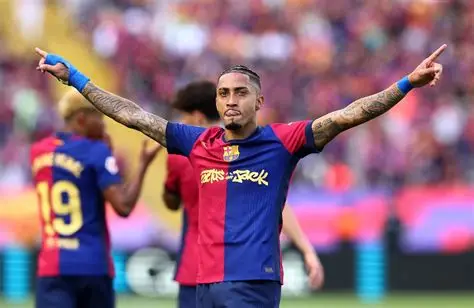
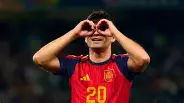
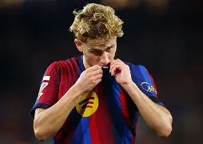
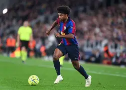
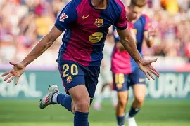

Lamine Yamal Nasraoui Ebana
Extremo derechoNacimiento: 13/07/2007
Lugar: Esplugues de Llobregat, España
Nacionalidad: España
Altura: 1,83 m
Peso: 72 kg
Posición: Delantero / Extremo derecho
Datos de LaLiga 2026/27 (FBref)

Raphael Dias Belloli "Raphinha"
Extremo izquierdoNacimiento: 14/12/1996
Lugar: Porto Alegre, Brasil
Nacionalidad: Brasil
Altura: 1,76 m
Peso: 68 kg
Posición: Extremo izquierdo
Datos de LaLiga 2026/27 (FBref)

Pedro González López "Pedri"
CentrocampistaNacimiento: 25/11/2002
Lugar: Tegueste, España
Nacionalidad: España
Altura: 1,74 m
Peso: 65 kg
Posición: Centrocampista
Datos de LaLiga 2026/27 (FBref)

Fermín López Marín
Centrocampista ofensivoNacimiento: 11/05/2003
Lugar: El Campillo, España
Nacionalidad: España
Altura: 1,76 m
Peso: 68 kg
Posición: Mediocentro ofensivo
Datos de LaLiga 2026/27 (FBref)
Anthony Michael Gordon
Extremo izquierdoNacimiento: 24/02/2001 (25 años)
Lugar: Liverpool, Inglaterra
Nacionalidad: Inglaterra
Altura: 1,83 m
Peso: 76 kg
Posición: Extremo izquierdo / Delantero
Sin datos de LaLiga 2026/27 en fuentes consultadas

Karim-David Adeyemi
Extremo izquierdoNacimiento: 18/01/2002 (24 años)
Lugar: Múnich, Alemania
Nacionalidad: Alemania
Altura: 1,80 m
Peso: 75 kg
Posición: Extremo izquierdo / Delantero
Datos de LaLiga 2026/27 (FootyStats)

Daniel Olmo Carvajal "Dani Olmo"
Centrocampista ofensivoNacimiento: 07/05/1998 (28 años)
Lugar: Terrassa, España
Nacionalidad: España
Altura: 1,79 m
Peso: 72 kg
Posición: Mediocentro ofensivo / Extremo
Datos de LaLiga 2026/27 · Asistencias no confirmadas en fuentes oficiales
Xavier Espart Font "Xavi Espart"
Centrocampista / Lateral derechoNacimiento: 21/05/2007 (19 años)
Lugar: Barcelona, España
Nacionalidad: España
Altura: 1,75 m
Peso: 65 kg
Posición: Centrocampista / Lateral derecho
Datos de LaLiga 2026/27 (FBref) · Bio: Wikipedia/Transfermarkt
Pau Cubarsí Paredes
Defensa centralNacimiento: 22/01/2007 (19 años)
Lugar: Estanyol, Girona, España
Nacionalidad: España
Altura: 1,84 m
Peso: 79 kg
Posición: Defensa central
Datos de LaLiga 2026/27 (FBref) · Bio: LALIGA/Transfermarkt
Rodrigo Hernández Cascante "Rodri"
Centrocampista defensivoNacimiento: 22/06/1996 (30 años)
Lugar: Madrid, España
Nacionalidad: España
Altura: 1,90 m
Peso: 90 kg
Posición: Centrocampista defensivo
Datos de LaLiga 2026/27 (FBref/FotMob) · Bio: FC Barcelona/Wikipedia
Eric García Martret
Defensa centralNacimiento: 09/01/2001 (25 años)
Lugar: Martorell, Barcelona, España
Nacionalidad: España
Altura: 1,80 m
Peso: 77 kg
Posición: Defensa central
Datos de LaLiga 2026/27 (FBref) · Bio: LALIGA
📊 Resumen de goles y asistencias · LaLiga 2026/27
| Jugador | Partidos | Goles | Asistencias | G+A |
|---|---|---|---|---|
| Raphinha | 9 | 13 | 3 | 16 |
| Lamine Yamal | 10 | 8 | 6 | 14 |
| Fermín López | 9 | 4 | 3 | 7 |
| Karim Adeyemi | 9 | 2 | 2 | 4 |
| Pedri | 10 | 1 | 2 | 3 |
| Xavi Espart | 8 | 1 | 2 | 3 |
| Pau Cubarsí | 7 | 0 | 2 | 2 |
| Rodri | 9 | 1 | 0 | 1 |
| Eric García | 8 | 1 | 0 | 1 |
| Dani Olmo | — | 1 | — | 1+ |
| Anthony Gordon | — | — | — | — |